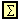
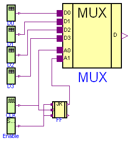
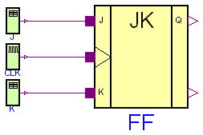
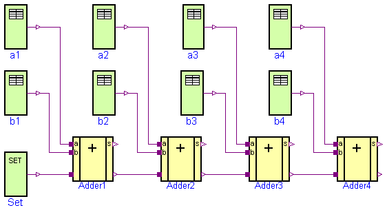
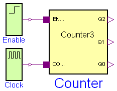
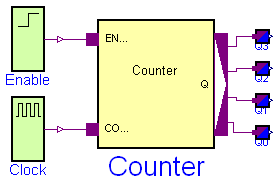

This package contains examples that demonstrate the usage of the components of the Electrical.Digital library.
| Name | Description |
|---|---|
| 4 to 1 Bit Multiplexer Example | |
| Pulse Triggered Master Slave Flip-Flop | |
|  HalfAdder | adding circuit for binary numbers without input carry bit |
| Full 1 Bit Adder Example | |
| 4 Bit Adder Example | |
| 3 Bit Counter Example | |
| Generic N Bit Counter Example | |
| Utility components used by package Examples |
 Modelica.Electrical.Digital.Examples.Multiplexer
Modelica.Electrical.Digital.Examples.Multiplexer
The multiplexer converts a parallel 4 bit signal in a sequential 1 bit stream.
model Multiplexer "4 to 1 Bit Multiplexer Example"
import D = Modelica.Electrical.Digital;
import L = Modelica.Electrical.Digital.Interfaces.LogicValue;
D.Sources.Clock CLK(period=20);
D.Sources.Table D0(
y0=3,
x={4,3,4,3},
t={50,100,145,200});
D.Sources.Table D1(
y0=3,
x={4,3,4,3},
t={22,140,150,180});
D.Examples.Utilities.MUX4 MUX;
D.Sources.Table D2(
y0=3,
x={4,3,4,3},
t={22,140,150,180});
D.Sources.Table D3(
y0=3,
x={4,3,4,3},
t={22,140,150,180});
D.Examples.Utilities.JKFF FF;
D.Sources.Set Enable;
equation
connect(CLK.y, FF.clk);
connect(Enable.y, FF.k);
connect(Enable.y, FF.j);
connect(CLK.y, MUX.a0);
connect(D0.y, MUX.d0);
connect(D1.y, MUX.d1);
connect(D2.y, MUX.d2);
connect(D3.y, MUX.d3);
connect(FF.q, MUX.a1);
end Multiplexer;
Modelica.Electrical.Digital.Examples.FlipFlop
Pulse-triggered master-slave flip-flop.
model FlipFlop "Pulse Triggered Master Slave Flip-Flop"
import D = Modelica.Electrical.Digital;
import L = Modelica.Electrical.Digital.Interfaces.LogicValue;
D.Examples.Utilities.JKFF FF;
D.Sources.Clock CLK(period=10);
D.Sources.Table J(
y0=3,
x={4,3,4,3},
t={50,100,145,200});
D.Sources.Table K(
y0=3,
x={4,3,4,3},
t={22,140,150,180});
equation
connect(J.y, FF.j);
connect(CLK.y, FF.clk);
connect(K.y, FF.k);
end FlipFlop;

This example demonstrates an adding circuit for binary numbers, which internally realizes the interconnection to
And and to Xor in the final sum.
1 + 0 = 1
0 + 1 = 1
1 + 1 = 10
0 + 0 = 0
a + b = s
(The carry of this adding is c.)
and
a * b = s
(It is an interconnection to And.)
a * b + a * b = a Xor b = c
(It is an interconnection to Xor.)
a b c s t
1 0 1 0 1
0 1 1 0 2
1 1 0 1 3
0 0 0 0 4
model HalfAdder
"adding circuit for binary numbers without input carry bit"
import Modelica.Electrical.Digital;
Sources.Table a(
t={1,2,3,4},
x={4,3,4,3},
y0=3);
Sources.Table b(
x={4,3},
t={2,4},
y0=3);
Digital.Examples.Utilities.HalfAdder Adder(delayTime=0.3);
Digital.Converters.LogicToReal s;
Digital.Converters.LogicToReal c;
equation
connect(b.y,Adder. b);
connect(a.y,Adder. a);
connect(Adder.s, s.x[1]);
connect(Adder.c, c.x[1]);
end HalfAdder;
 Modelica.Electrical.Digital.Examples.FullAdder
Modelica.Electrical.Digital.Examples.FullAdder

It is an adding circuit for binary numbers with input carry bit, which consists of two HalfAdders.
a.y, b.y and c.y are the inputs of the FullAdder.
cout = Or1.y and h.s are the outputs of the Fulladder.
t is the pick-up instant of the next bit(s) in the simulation.
a.y b.y c.y cout h.s t
1 0 0 0 1 1
0 1 0 0 1 2
0 0 1 0 1 3
1 1 0 1 0 4
0 1 1 1 0 5
1 0 1 1 0 6
1 1 1 1 1 7
0 0 0 0 0 8
The simulation stop time should be 10 seconds.
model FullAdder "Full 1 Bit Adder Example" import D = Modelica.Electrical.Digital; import L = Modelica.Electrical.Digital.Interfaces.LogicValue; Digital.Examples.Utilities.FullAdder Adder1; Digital.Converters.LogicToReal s; Digital.Converters.LogicToReal c_out; Digital.Examples.Utilities.Counter3 Counter; Digital.Sources.Set Enable(x=L.'1'); Digital.Sources.Clock CLK; equation connect(Adder1.s, s.x[1]); connect(Adder1.c_out, c_out.x[1]); connect(CLK.y, Counter.count); connect(Enable.y, Counter.enable); connect(Counter.q2, Adder1.a); connect(Counter.q1, Adder1.b); connect(Counter.q0, Adder1.c_in); end FullAdder;
 Modelica.Electrical.Digital.Examples.Adder4
Modelica.Electrical.Digital.Examples.Adder4
Four Fulladders are combined to built a four bit adder unit.
In dependence on time five additions are carried out:
at t = 0 at t = 1 a 0 0 0 0 a 1 1 1 0 b + 0 0 0 0 b + 1 0 1 1 s 0 0 0 0 0 s 1 0 0 1 0 at t = 2 at t = 3 a 0 1 1 0 a 1 1 1 0 b + 0 0 1 1 b + 1 0 1 0 s 1 0 1 0 0 s 0 0 0 1 1 at t = 4 a 1 1 0 0 b + 1 1 1 0 s 0 0 1 0 1To show the influence of delay a large delay time of 0.1s is choosen. Furthermore, all signals are initialized with U, the unitialized value. Please remember, that the nine logic values are coded by the numbers 1,...,9. The summands a and b can be found at the output signals of the taba and tabb sources. The result can be seen in the output signals of the Fulladders according to:
a a4.y a3.y a2.y a1.y
b b4.y b3.y b2.y b1.y
sum Adder4.c_out Adder4.s Adder3.s Adder2.s Adder1.s
The simulation stop time has to be 5s.
model Adder4 "4 Bit Adder Example"
import Modelica.Electrical.Digital;
Digital.Sources.Table b4(
y0=3,
x={4,3},
t={1,3});
Digital.Sources.Table b1(
x={4,3,4},
y0=3,
t={1,2,3});
Digital.Sources.Table b2(
y0=3,
x={4},
t={4});
Digital.Sources.Table b3(
y0=3,
x={4},
t={1});
Digital.Sources.Table a1(
y0=3,
x={4,3,4},
t={1,2,3});
Digital.Sources.Table a2(
y0=3,
x={4},
t={1});
Digital.Sources.Table a3(
y0=3,
x={4,3},
t={1,4});
Digital.Sources.Table a4(
y0=3,
x={3},
t={1});
Sources.Set Set(x=3);
Digital.Examples.Utilities.FullAdder Adder1;
Digital.Examples.Utilities.FullAdder Adder2;
Digital.Examples.Utilities.FullAdder Adder3;
Digital.Examples.Utilities.FullAdder Adder4;
equation
connect(b1.y, Adder1.b);
connect(a1.y, Adder1.a);
connect(Set.y, Adder1.c_in);
connect(Adder1.c_out, Adder2.c_in);
connect(Adder2.c_out, Adder3.c_in);
connect(Adder3.c_out, Adder4.c_in);
connect(b2.y, Adder2.b);
connect(a2.y, Adder2.a);
connect(b3.y, Adder3.b);
connect(a3.y, Adder3.a);
connect(b4.y, Adder4.b);
connect(a4.y, Adder4.a);
end Adder4;
Modelica.Electrical.Digital.Examples.Counter3
model Counter3 "3 Bit Counter Example" import D = Modelica.Electrical.Digital; D.Sources.Step Enable; D.Sources.Clock Clock; D.Examples.Utilities.Counter3 Counter; equation connect(Enable.y, Counter.enable); connect(Clock.y, Counter.count); end Counter3;
Modelica.Electrical.Digital.Examples.Counter
model Counter "Generic N Bit Counter Example" import D = Modelica.Electrical.Digital; D.Sources.Step Enable; D.Sources.Clock Clock; D.Examples.Utilities.Counter Counter(n=4); D.Converters.LogicToReal Q0; D.Converters.LogicToReal Q1; D.Converters.LogicToReal Q2; D.Converters.LogicToReal Q3; equation connect(Enable.y, Counter.enable); connect(Clock.y, Counter.count); connect(Q0.x[1], Counter.q[1]); connect(Q1.x[1], Counter.q[2]); connect(Q2.x[1], Counter.q[3]); connect(Q3.x[1], Counter.q[4]); end Counter;